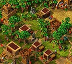
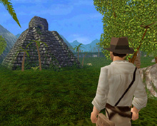

Vilain Game Designer ! Pas de biscuit pour toi ! II
L'article original est écrit par Ernest Adams publié par Gamasutra (mars 2000).
L'auteur original n'est en aucun cas reponsable de la précision de cette traduction.
Il y a à peine deux ans, j’ai écrit un article intitulé « Vilain Game Designer ! Pas de biscuit pour toi ! » qui traitait de ce que je considérais comme des fautes de conception – des choses qui m’irritaient dans certains jeux vidéo. Celui-ci a déclenché un important afflux d’e-mails, la plupart disaient « Oui ! Moi aussi ! », mais d’autres faisaient remarquer que j’avais été injuste par moments. Dans tous les cas, il s’agissait d’un thème populaire (et potentiellement sujet à débat) et j’ai donc commencé à établir une liste de choses qui m’irritaient dans les jeux. J’en ai cinq sous la main, et plus pour lesquelles je n’ai plus de place, c’est pourquoi le temps est venu pour un « Vilain Game Designer ! Pas de biscuit pour toi ! II ». Il s’agit pour certaines d’erreurs de programmation et non de design, mais vous avez saisi l’idée.

Les jeux qui tournent trop vite
Je sais que cela peut sembler bizarre – depuis quand le fait de tourner trop vite est un problème ? Mais j’aime jouer à de vieux jeux, et les vieux jeux, conçus pour de vieux supports, tournent souvent trop vite sur des machines plus récentes. Évidemment, ce n’est pas un inconvénient pour les jeux console, mais il s’agit d’un problème majeur pour les jeux PC.
D’un point de vue financier, bien sûr, il est peu probable que les éditeurs en aient quelque chose à faire. Pour eux, un jeu vieux de cinq ou dix ans, c’est de l’histoire ancienne. Ils en ont tiré tout le profit qu’ils pouvaient ; celui-ci ne tourne plus correctement ; les clients sont censés allonger la monnaie pour de nouveaux jeux, pas jouer à de vieux jeux. Mais du point de vue technique, il n’y a aucune excuse. C’est de la programmation bâclée. Si votre jeu tourne tellement vite que cela en devient injouable, cela signifie que vous ne gardez pas de trace d’à quelle vitesse le jeu devrait tourner et, pire, vous gaspillez l’une de vos plus précieuses ressources, le temps de calcul disponible. Il y a des tonnes de choses que vous pourriez faire avec du temps de calcul disponible supplémentaire, comme :
- Générer des étapes d’animation supplémentaire et fournir ainsi une animation plus fluide. Ceci est possible uniquement si votre système d’animation est capable de générer des intervalles supplémentaires, mais c’est de plus en plus souvent le cas aujourd’hui.
- Passer plus de temps sur l’intelligence artificielle. Aller plus loin dans les calculs de l’arborescence du jeu ; permettre à votre algorithme de pathfinding de regarder plus loin ; donner à vos monstres un plus gros cerveau. Une IA adaptative n’est pas triviale à mettre en place, mais si une partie quelconque de celle-ci, comme le pathfinding, implique une suite de calculs répétitifs, alors cette partie constitue un candidat idéal pour bien utiliser le temps de calcul disponible supplémentaire.
- Générer des polygones supplémentaires. Un bon nombre des jeux compensent la lenteur des machines sur lesquelles ils tournent en diminuant le nombre total de polygones qu’ils affichent, ce qui a des résultats aussi laids que l’on peut l’imaginer. Pourquoi ne pas aller dans la direction opposée ? Concevoir un jeu qui serait absolument fantastique sur un hypothétique PC à 3 GHz, puis concevoir des processus internes visant à l’adapter aux supports actuels. A mesure que le hardware se développe, votre jeu ne cessera de devenir plus beau. Évidemment, il y a des problèmes de mémoire ou autres qui ne concernent pas le temps de calcul disponible, mais c’est une technique qui vaut la peine d’être étudiée.
Le premier jeu que j’ai programmé professionnellement devait tourner sur un système allant d’un 4.77 MHz 8086 à un 25 MHz 80386 – et parce qu’il s’agissait d’un jeu multijoueur, il devait tourner à la même vitesse sur l’ensemble des systèmes compris dans cette gamme. J’ai réussi à réaliser ceci en basant tout mon travail sur des timers. La boucle principale tournait aussi vite que le permettait la réactivité maximale du clavier et de la souris, mais les processus d’affichages étaient liés à des timers et ne se lançaient que lorsque le timer le permettait. Je n’ai pas essayé mais je subodore qu’il tournerait encore à la même vitesse sur mon Pentium II 400 MHz.
Pause et sauvegarde
Le problème de la sauvegarde constitue un sujet de débat parmi les game designers depuis le tout premier jour, mais je sais comment je me positionne vis-à-vis de ce problème : du côté du joueur. De nombreux designers n’aiment pas la possibilité de sauvegarder à loisir, parce que cela permet aux joueurs de recommencer chaque fois que de petites choses ne se passent pas comme prévu, ce qui signifie qu’ils avancent plus rapidement dans le jeu et perdent moins souvent. Pour faire court, ils ne subissent pas toute la souffrance et la déception que le designer avait prévues pour eux. Dommage. Recommencer tout un niveau parce que vous avez commis une erreur juste avant la fin est frustrant et ennuyeux. En tant que designer, est-ce vraiment votre but ?
Pour moi, l’argument principal est qu’il s’agit de la machine du joueur. Il n’est pas juste de le pénaliser parce qu’il doit aller aux toilettes ou répondre au téléphone. Les joueurs devraient pouvoir mettre en pause quand et où ils le désirent, sans perdre tout ce qu’ils ont accompli jusqu’à présent. Si mettre le jeu en pause affecte le gameplay de façon substantielle, comme dans Tetris par exemple, alors il suffit d’afficher un écran totalement noir lorsque le jeu est en pause. Évidemment, ceci ne s’applique pas aux jeux multijoueurs.
Deadlocks
Une deadlock, ou dans une terminologie française assez romantique, une “étreinte mortelle », se produit quand deux processus attendent chacun que l’autre ait fini quelque chose et ainsi, aucun des deux ne fait plus rien. Empêcher les deadlocks constitue un problème classique en informatique pour les systèmes multitâches : le processus A fournit la ressource X mais a tout de même besoin de la ressource Y ; le processus B fournit la ressource Y mais a besoin de la ressource X, si bien que chacun attend indéfiniment que l’autre ait fini pour fournir la ressource nécessaire.
En termes de game design, une deadlock survient lorsque vous avez besoin d’une ressource pour construire un mécanisme de production pour obtenir plus de cette même ressource. J’ai remarqué ce problème pour la première fois en jouant à Settlers 3. Je n’avais pas assez de pierre pour construire une hutte de tailleur de pierre, mais sans une telle hutte, je ne pouvais pas récupérer plus de pierre non plus. Ce n’était pas vraiment la faute du jeu, car celui-ci m’avait fourni assez de pierre pour commencer, mais je l’avais allouée entièrement à d’autres choses. Bien sûr, dans certains cas, on peut rechercher la deadlock comme une condition de défaite : dans un jeu de stratégie par exemple, si le joueur perd toutes ses unités de construction ainsi que le seul bâtiment qui permette de produire ces unités de construction, le système peut le détecter et lui signaler qu’il a perdu.

Plus votre modèle économique devient compliqué, plus il est probable que des deadlocks surviennent. Settlers 3 possède un modèle économique inhabituellement complexe. Quand j’ai créé ce deadlock, ma communauté prospérait et je n’étais pas assailli par l’ennemi à ce moment du jeu, on ne pouvait donc pas vraiment dire que j’étais en train de perdre ; j’ai simplement commis une erreur économique. Heureusement, le jeu fournissait le moyen de contourner le problème : je pouvais démolir d’autres bâtiments afin de récupérer une partie des matériaux de construction. Finalement, j’en ai démolis suffisamment pour récupérer la pierre nécessaire à la construction d’une hutte de tailleur de pierre, et j’étais de retour dans le jeu. Une façon d’éviter les deadlocks consiste à fournir une source alternative, même si sa valeur est minimale. C’est le but de la case départ au Monopoly, qui permet au joueur de récupérer de l’argent à chaque tour de plateau. Même si vous ne possédez aucune propriété permettant de vous assurer une rente, vous êtes quand même sûr de récupérer cette somme. Les deadlocks ne constituent pas toujours des erreurs de designs, mais vous devez fournir un moyen soit de briser la boucle (passer par la case départ, démolir d’autres bâtiments, etc.), soit de la détecter et de mettre fin au jeu. Les jeux qui aboutissent à des deadlocks et y restent indéfiniment (et j’y ai joué) sont pénibles.
Bouger d’improbablement gros blocs de pierre
Me voici donc, en train de jouer à la démo de Indiana Jones and the Infernal Machine, et je n’arrive pas à sortir de la toute première pièce du jeu. Je n’ai pas beaucoup joué à ce genre de jeu, parce qu’ils demandent généralement trop de réflexes, mais je pense que je peux faire confiance à LucasArts pour ne pas exiger une trop grande coordination œil-main. J’essaye absolument tout ce à quoi je peux pense, sans succès. Je ne peux même pas sortir de la première pièce du jeu… Décidément, quel nul ! Finalement, je craque et je vais chercher une solution.

Oh, voici la réponse ! Il y a un bloc de pierre, d’environ 1m50 de haut, que je suis censé déplacer quelque part… HEIN ? Voyons voir, la masse volumique de la roche est de l’ordre de 2600 kilogrammes par mètre cube, le bloc fait environ 2,25 mètres cubes, ce qui nous fait une masse de l’ordre de 6 tonnes. C’est à peu près autant que la masse d’un des monolithes de Stonehenge. Et Indy est supposé le déplacer juste en tirant dessus, c’est bien ça ? Décidément, je me demande pourquoi je n’y ai pas pensé.
Ok, je sais que la gestion de la physique dans les jeux est ridicule la plupart du temps – la première fois que j’ai vu Sonic le hérisson changer de direction en plein milieu de sa chute, j’ai entendu un étrange bruit : c’était Isaac Newton qui se retournait dans tombe. Peut être que ce concept de tirer-des-blocs-immenses-aux-alentours est une convention tellement bien acceptée que je devrais peut-être juste essayer de m’y faire. Néanmoins, j’ai toujours pensé que les jeux Indiana Jones étaient conçus pour ressembler un tant soit peu au monde réel. Les puzzle games impliquent une forme de pensée latérale, mais la pensée latérale elle-même est tout de même soumise à certaines limitations qu’il semble raisonnable de prendre en compte – sans quoi vous n’arrêteriez jamais de vous prendre la tête. Personnellement, j’ai tendance à écarter immédiatement les impossibilités physiques évidentes. Je suppose que cela dépend dans une certaine mesure du genre, mais dans ce cas particulier, cela m’a beaucoup irrité. Indiana Jones est un être humain, pas un Superman.
Énormes poitrines et autres puérilités
Il y a quelques années, EA avait demandé à plusieurs artistes de concevoir des animations de pom-pom-girls pour une édition cartouche de Madden NFL Football. Ils nous ont rendu une misérable animation à quatre temps de femmes avec des poitrines complètement improbables en train de sauter de haut en bas. Nous les avons virés et avons engagé quelqu’un autre pour ce travail. Nous ne les avons pas renvoyés uniquement parce qu’ils avaient fait un travail de piètre qualité ; nous les avons renvoyés parce qu’il s’agissait d’abrutis plus occupés à satisfaire leur propre voyeurisme ricanant qu’à livrer à l’entreprise ce dont elle avait besoin, qui nous ont fait perdre notre temps et notre argent. J’ai un message pour les balourds dépourvus de talent qui insistent pour mettre de l’humour puéril et des femmes aux poitrines délirantes dans les jeux vidéo. Comment tourner cela de façon diplomatique ? Ah, ça y est, je l’ai :
Grandissez.
Vous êtes une honte et une disgrâce. C’est à cause de l’exemple que vous donnez que le reste d’entre nous devons expliquer à nos proches, nos amis et, parce que c’est important, aux députés, que nous ne sommes pas tous des rustres sans goût et avides d’argents, que vous seuls l’êtes. J’ai passé beaucoup de temps à essayer de convaincre des non-joueurs (mais des gens qui votent) que vous, les habitués dégoulinant de bave des peep-shows, n’étiez en fait qu’une minorité dont les produits imbéciles et le manque le plus total de discernement salissaient injustement le reste de l’industrie. Bien sûr, si vous vous inquiétiez des effets que votre déballage de lubricité adolescente a sur la réputation du milieu ou sur les conséquences possibles de celui-ci sur les débats sur la régulation des jeux vidéo, vous ne le feriez pas, mais non, vous être trop engoncés dans vos fantasmes infantiles pour faire attention à autre chose que le bout de vos phallus obscènes.
Ce serait encore tolérable si vous étiez un tant soit peu bons dans ce domaine, mais vos produits ne constituent même pas des produits érotiques décents. Ils sont stupides, blessants, ils ne sont ni sexy, ni drôles. J’aime à penser qu’à mesure que le marché mûrit, vous serez poussés dehors, ou au moins considérés comme hors de propos. Finalement, les rois du porno ont arrêté de prétendre qu’ils étaient de vrais cinéastes et sont partis créer leur propre industrie, avec vos propres standards de qualité (très bas). Pourquoi ne faîtes-vous pas la même chose ? Vous pourriez alors avoir vos propres réunions d’affaires, vos propres récompenses et traîner avec les gens de votre espèce : les mains moites, le souffle rauque, bas de plafond et des gonades à la place du cerveau. Grandissez ou sortez.
Ajouter un commentaire
Commentaires

Très instructif, en tant que programmeur c'est super de trouver des articles sur le Game Design clairs et bien expliqués. Merci beaucoup, les articles se lisent tous seuls et en apprennent énormément.
Merci encore !
--Deimz